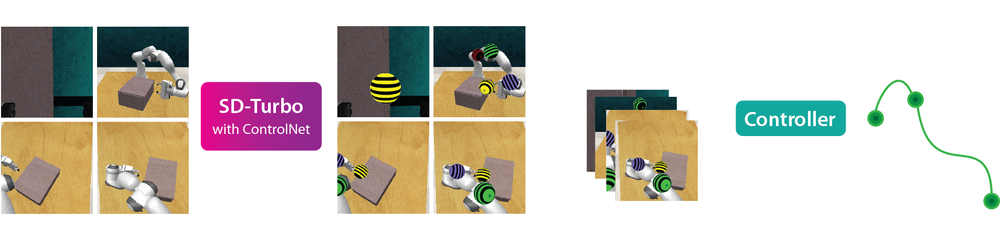

Image-generation diffusion models have been fine-tuned to unlock new capabilities such as image-editing and novel view synthesis. Can we similarly unlock image-generation models for visuomotor control? We present Genima, a behavior-cloning agent that fine-tunes Stable Diffusion to “draw joint-actions” as targets on RGB images. These images are fed into a controller that maps the visual targets into a sequence of joint-positions.
We study Genima on 25 RLBench and 9 real-world manipulation tasks. We find that, by lifting actions into image-space, internet pre-trained diffusion models can generate policies that outperform state- of-the-art visuomotor approaches, especially in robustness to scene perturbations and generalizing to novel objects. Our method is also competitive with 3D agents, despite lacking priors such as depth, keypoints, or motion-planners.
Genima is a behavior-cloning agent that maps RGB observations and language goals to joint-position actions. Genima is composed of two-stages: (1) a diffusion agent that fine-tunes SD-Turbo with ControlNet to draw target joint-positions. The joint-positions are t+K timsteps ahead, and each joint is rendered as a colored sphere: base, elbow, wrist, gripper open and close. (2) These target images are fed into an ACT-based controller that maps visual targets into a sequence of K joint-position actions. The controller is trained with random backgrounds to ignore the context and just follow targets.
By lifting actions into image-space, we formulate action-generation as an image-generation problem. Since image-generation diffusion models are generalists in producing arbitrary visual-patterns, we fine-tune them to draw action-patterns for generalizable visuomotor learning.
GENIMA achieves a success rate of 79.3% on this task.
@inproceedings{shridhar2024generative,
title = {Generative Image as Action Models},
author = {Shridhar, Mohit and Lo, Yat Long and James, Stephen},
booktitle = {Proceedings of the 8th Conference on Robot Learning (CoRL)},
year = {2024},
}